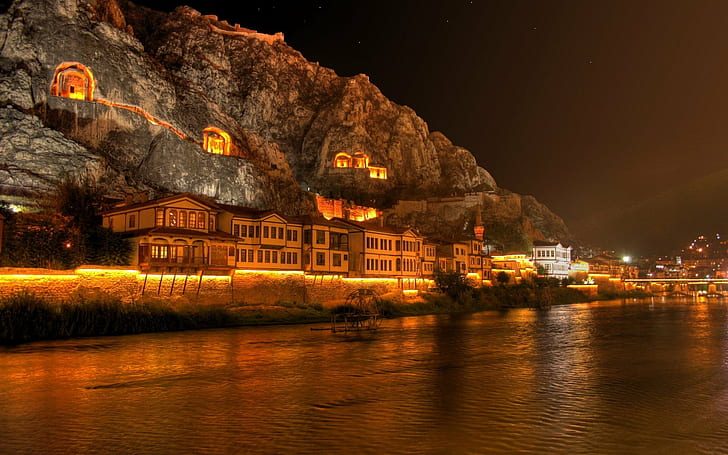
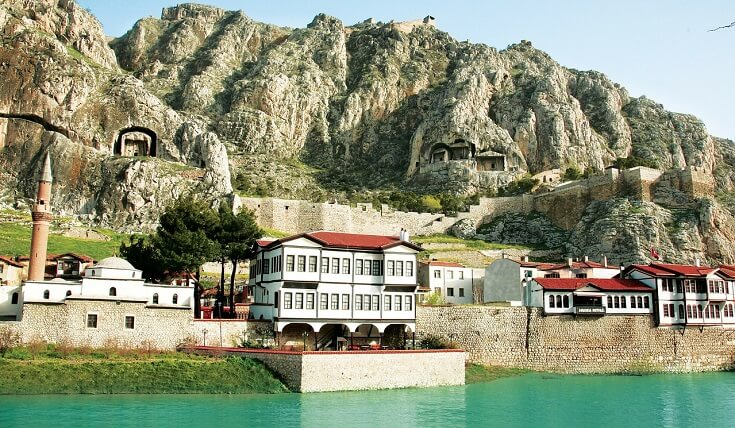
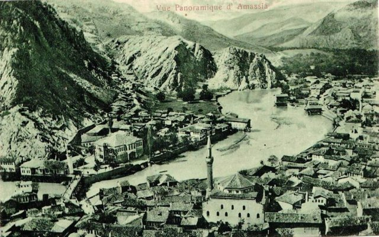

GENEL BAKIŞ
Amasya, Karadeniz bölgesi'nde Amasya ilinin merkez ilçesidir. 2019 itibarıyla amasya(Merkez ilçe) 150.828 nüfusa sahiptir.
Orta Karadeniz Bölümü'nde yer alır. Anadolu'nun eski yerleşim alanlarından birisidir. Hititlerden başlayarak çeitli uygarlıkların
merkezi olmuştur.
Kentin bilinen en eski adı, söylendiği biçimi ile günümüze kadar hiçbir değişikliğe uğramadan gelen Amasya'dır.
Eski kayıtlarda ve buluntularda Amessesia- Amacia- Amaccia ismi okunmaktadır. Amasya isminin açık şekilde okunduğu Pers, Pentos,
ve Roma İmparatorluğu dönemlerinde ticarette kullanılan gümüş ve bronz sikkeler(paralar) üzerinde görmek mümkündür.
Bazı sikkeler üzerinde Amaccia veya Amacia isimlerine rastlanmaktadır. Amasya'nın fethinden önce ve sonrasında Türkler, Amasseia' yı
Türkçe'de söylendiği gibi Amasya yapmışlardır.
Tahminen MÖ.60 ve MS.19. yıllarda Amasya'da doğduğu bilinen ve Coğrafya ilminin mucidi olarak tanınan Strabon yazdığıünlü coğrafya
kitabında Amasya'dan Amasessia olarak söz etmektedir.

TARİHÇE
1. Etimoloji
Strabon'a göre Amasya ismi, burada yaşamış olan bir amazon kraliçesi olan Amasis'den gelmektedir. Bulunan Yunan ve Roma sikkelerinde görüldüğü
üzere isim zamanla Amaseia, Amassia ce amasia olarak değişmiş ve sonunda Türkler amasya olarak adlandırmışlardır.
Amasya'da bu güne kadar 19 farklı devletin yaşadığı söylenir.
2. Helenistik - Bizans Dönemi Amasya
Amasya şehrinin kuruluş tarihi kesin olarak bilinmemekle birlikte yerleşiminin Hitit dönemine kadar uzadığı tahmin edilmektedir.
Seloukoslar döneminde önemli bir konuma sahip olan yerleşim daha sonra M.Ö 281 yılında kurulan pontus Krallığı'na bir süre
başkentlik yaptı. M.Ö 70 yılında general Lucuis Licinius Lucullus tarafından roma topraklarına katıldı.
IV. yüzyılın ikinci yarısında Roma İmparatorluğu'nun ikiye bölünmesiyle yerleşim Doğu Roma İmparatorluğu'na katıldı. 712 yılında
Arap ordularınca ele geçirilen yerleşim kısa süre sonra III. Leon tarafından yeniden Bizans topraklarına katıldı. Yerleşim bu tarihten XI. yüzyıl sonuna
kadar Bizans hakimiyetine katıldı.
3. Türklerin Amasya'ya Yerleşmesi
1071 yılında yaşanan Malazgirt Meydan Muharebesi sonrasında Anadolu'nun bir çok şehri gibi Amasya da XI. yüzyıl içinde Türk egemenliğine geçti.
Artuk Bey tarafından ele geçirilen yerleşim daha sonra Danişment Gazi'nin denetimine bırakıldı. 1080 yılında da yeni kurulan danişment Beyliği topraklarına katıldı.
Şehir II. Kılıçarslan tarafından 1175 yılında Anadolu Selçuklu Devleti topraklarına katıldı.Kılıçarslan tarafından oğlu Nizameddin Argunşah'a bırakılan yerleşim
1193 yılında Kılıçarslan'ın diğer bir oğlu Rükneddin süleyman tarafından ele geçirildi.
1237 yılında başlayan Babai ayaklanması'nda isyancıların denetimine giren yerleşim 1240 yılında Selçuklu kuvvetlerince yeniden ele geçirilmiş, isyanın ele başlarından Baba İshak
yakalanarak amasya Kalesi'nde idam edilmiştir. Babai Ayaklanması ile yie güçsüzleşen Selçuklular 1243 yılında meydana gelen Kösedağ Muharebesi ile Anadolu'da güç kaybetmeye başlamış, 14.yüzyıl
başlarında Amasya şehri Moğol valilerce yönetilmeye başlanmıştır. Kısa süreliğine II. Gıyaseddin Mesud'un oğlu Taceddin Altınbaş tarafından ele geçirilen yerleşim sonrasında Eretna Beyliği topraklarına katılmıştır.
14. yüzyılın ikinci yarısında yerleşim emir Hacı Şadgeldi tarafından ele geçirildi. Şadgeldi'nin ölümünden sonra oğlu Amhmed, Osmanlı hükümdarı I. Bayezid'tan destek istemiş ve şehri Kadı Burhaneddin'e karşı savunmuştur..
Osmanlı - Kadı Burhaneddin mücadelesi sonrasında Amasya 1393 yılında Osmanlı topraklarına katılmıştır. Şehrin idaresine şehzade Çelebi Mehmed getirildi.
4. Osmanlı Dönemi Amasya
1402 yılında gerçekleşen ankara Savaşı sonrasında Çelebi Mehmed Amasya'ya çekildi. Fetret Devri olarak adlandırılan dönemde kardeşiyle ve diğer beyliklerle mücadelesini 1413 yılına kadar amasya'da sürdürdü.
Osmanlı İmparatorluğu döneminde bir çok padişah Amasya'da dünyaya gelmiş ve şehzadelik yapmıştır. Bu sebeple Amasya Osmanlı tarihi açısından da büyük öneme sahiptir. ı. Mehmet, II. Murat, Fatih sultan Mehmet, Yavuz Sultan Selim gibi padişahlar
Amasya'da şehzadelik yapmışlardır.
Amasya 15. yüzyılda bir süre rum Eyaleti merkez şehri konumda bulundu. Ayrıca Amasya 16. yüzyıl sonlarına kadar Osmanlılar'ın doğu sınırında stratejik bir öneme sahip olmuştur. 1520 yılı tarihinde amasya 48'i Müslüman,
4'ü gayrimüslim olmak üzere 52 mahalleden oluşan bir şehir konumundaydı. 1555 yılında amasya Antlaşması burada imzalanmıştır.
Şehir, Celali İsyanları sırasında 17. yüzyıl başlarında tahribata uğradı. Burdan sonra önemli bir tarihi olayın yaşanmadığı bir sancak merkezi olarak sakin bir dönem geçirmiştir.
5. Milli Mücadele Dönemi Amasya

19 Mayıs 1919 tarihinde Samsun'da başlayan Kurtuluş Savaşı'nın (Millî Mücadele)'nin ilk adımı, 12 Haziran 1919 tarihinde Mustafa Kemal'in Amasya'ya gelmesiyle atılmıştır.
Kurtuluş mücadelesinin planları hazırlanmış, Erzurum Kongresi ve Sivas Kongresi'nin toplanmasına burada karar verilmiş, 22 Haziran 1919 tarihinde yayınlanan "Amasya Genelgesi" ile
"Milletin İstiklâlini Yine Milletin Azim ve Kararı Kurtaracaktır" denilerek Millî Mücadele burada fiiliyata geçirilmiştir. Bu itibarla, Amasya, Türkiye Cumhuriyeti'nin kuruluşunda da ilk önemli adımın atıldığı yer olmuştur.
1923 yılında yeni kurulan Türkiye Cumhuriyeti' nin idari taksimatı sonucunda Amasya ilinin merkez şehri oldu.